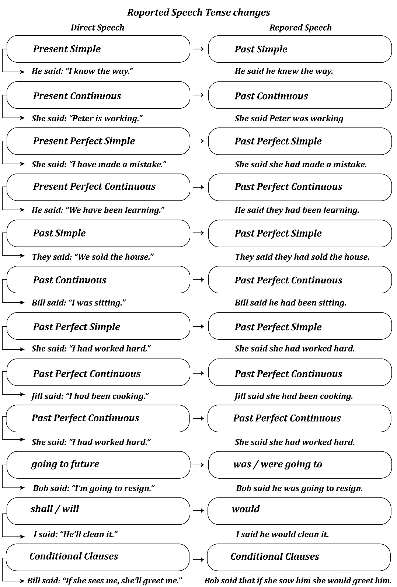
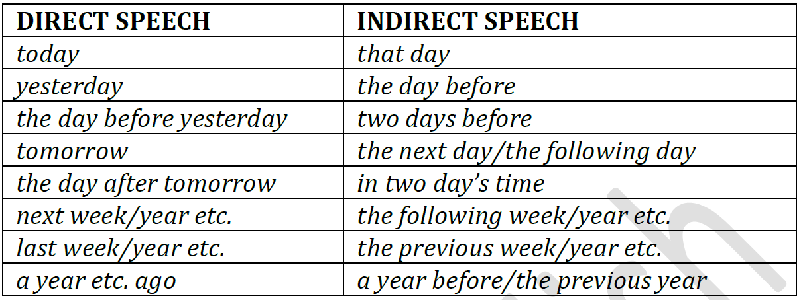

Reported Speech
DIRECT AND INDIRECT (OR REPORTED) SPEECH.
INTRODUCTION
There are two ways of relating what a person has said: direct and indirect.
In direct speech we repeat the original speaker’s exact words :
He said, “I have lost my umbrella.”
Remarks thus repeated are placed between inverted commas, and a comma is placed immediately before the remark. Direct speech is found in conversations in books, in plays and in quotations.
In indirect speech we give the exact meaning of a remark or a speech, without necessarily using the speaker’s exact words :
He said (that) he had lost his umbrella.
There is no comma after say in indirect speech. that can usually be omitted after say and tell + object. But it should be kept after other verbs: complain, explain, object, point out, protest etc. Indirect speech is normally used when conversation is reported verbally, though direct speech is sometimes here to give a more dramatic effect.
When we turn direct speech into indirect, some changes are usually necessary.
PRONOUNS AND ADJECTIVES: CHANGES NECESSARY
A. First and second person pronouns and possessive adjectives normally
change to the third person except when the speaker is reporting his own words. (I = he, she | me = him, her | my = his, her | mine = his, hers | we = they...)
She said, “he’s my son”. → She said that he was her son.
“I’m ill”, she said. → She said that she was ill.
B. THIS / THESE
This used in time expressions usually becomes that.
She said, “She’s coming this week”. → She said that she was coming that week.
This and that used as adjectives usually change to The.
He said, “I bought this pearl / these pearls for my mother”
He said that he had bought the pearl / the pearls for his mother.
This, these used as pronouns can become it, they / them.
He came back with two knives and said, “I found these beside the king’s
He said he had found them beside the king’s bed.

A. EXPRESSIONS OF TIME AND PLACE IN INDIRECT SPEECH
Adverbs and adverbial phrases of time change as follows:

“I saw her the day before yesterday”, he said. → He said he’d seen her two days before.
“I’ll do it tomorrow”, he promised. → He promised that he would do it the next day.
She said, “My father died a year ago”. → She said that her father had died a year before/the previous year.
B. QUESTIONS IN INDIRECT SPEECH
Direct question: He said, “Where is she going?”
Indirect question: He asked where she was going.
He said, “Where is the station?” → He asked where the station was.
1. ask can be followed by the person addressed (indirect object):
He asked, “What have you got in your bag?” → He asked (me) what I had got in my bag.
He said, ”Mary, when is the next train?” → He asked Mary when the next train was.
2. If the direct question begins with a question word (when, where, who, how, why etc.) the question word is repeated in the indirect question:
He said, “Why didn’t you put on the brake?” → He asked (her) why she hadn’t put on the brake.
She said, “What do you want?” → She asked (them) what they wanted..
C. COMMANDS, REQUESTS, ADVICE IN INDIRECT SPEECH
Direct command: He said, “Lie down, Tom”.
Indirect command: He told Tom to lie down.
Indirect commands, requests, advice are usually expressed by a verb of command/request/advice + object + infinitive.
1. The following verbs can be used: advise, ask, beg, command, order, remind, tell, warn etc.
He said, “Get your coat, Tom!” → He told Tom to get his coat.
2. Negative commands, requests etc. are usually reported by not + infinitive:
“Don’t swim out too far, boys”, I said → I warned/told the boys not to swim out too far.
D. EXCLAMATIONS IN INDIRECT SPEECH
Exclamations usually become statements in indirect speech. The exclamation mark disappears.
a. Exclamations beginning What (a) ... or How ... can be reported by:
- exclaim/say that:
He said, “What a dreadful idea!” or “How dreadful!” → He exclaimed that it was a dreadful idea/was dreadful.
E. OFFERS AND SUGGESTIONS IN INDIRECT SPEECH
1. OFFERS
“Shall I bring you some tea?” could be reported → He offered to bring me some tea.
2. SUGGESTIONS
“Shall we meet at the theatre? could be reported → He suggested meeting at the theatre.
F. SAY AND TELL AS INTRODUCTORY VERBS
1. say and tell with direct speech.
2. say can introduce a statement or follow it.
Tom said, “I’ve just heard the news”. or “I’ve just heard the news”,Tom said.
Inversion of say and noun subject is possible when say follows the statement.
“I’ve just heard the news”, said Tom.
3. tell requires the person addressed.
Tell me. He told us. I’ll tell Tom.
Except with tell lies/stories/the truth/the time, when the person addressed need not to be mentioned.
He told (me) lies. I’ll tell (you) a story.
Tell used with direct speech must be placed after the direct statement:
“I’m leaving at once”, Tom told me
G. REPORTED ORDERS
“Go to bed!” → He told the child to go to bed.
“Don't worry!” → He told her not to worry.
“Be on time!” → He told me to be on time.
“Don't smoke!” → He told us not to smoke.